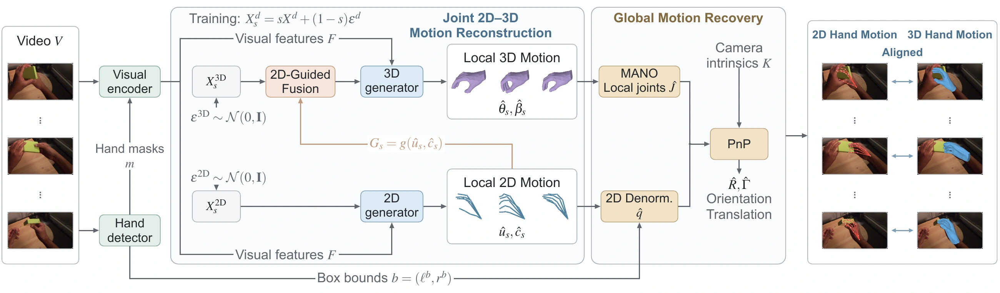
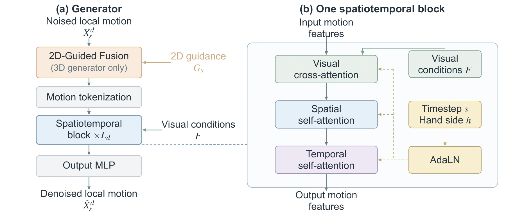

A joint motion prior
Two modality-specific generators learn 2D and 3D local motion within one flow-matching process. Both motion states evolve along the same generation timeline, conditioned on full-frame video features.
Joint 2D–3D generation · Monocular video
1The University of Hong Kong 2UC Berkeley
Learning hand motion directly from video.
Generating aligned 2D and 3D trajectories for accurate, smooth reconstruction.
01 / In motion
Generated 2D joints and recovered 3D meshes,
overlaid on the input video.
● Predicted 2D ● Ground-truth 2D
Left: predicted and ground-truth 2D joints. Right: the reconstructed hand mesh in the camera view. Select a video to play.
02 / The core idea
Learn local hand dynamics.
Recover global placement geometrically.
Two modality-specific generators learn 2D and 3D local motion within one flow-matching process. Both motion states evolve along the same generation timeline, conditioned on full-frame video features.
At every flow step, the predicted clean 2D joints provide visibility-weighted guidance to their corresponding 3D joints. This lets the 3D generator use the evolving 2D geometry throughout reconstruction.
After restoring the image-plane location and scale of the 2D poses, a PnP solver uses the 2D–3D correspondences and camera intrinsics to recover global orientation and translation.

Visual cross-attention introduces image evidence, while spatial and temporal self-attention model joint relationships and motion across frames. Timestep and hand-side information condition the generators through adaptive layer normalization.

03 / Selected results
HO3Dv3 · Local pose
PA-MPJPE ↓
HO3Dv3 · Camera-space pose
MPJPE ↓
HOT3D · Temporal smoothness
Acceleration error ↓
Hand recovery · 128 frames
Single NVIDIA H200 ↓
On HOT3D, JoHan reduces acceleration error by 62.3% relative to HaWoR while achieving a local pose error of 4.75 mm. On HO3Dv3, aligned 2D–3D predictions support camera-space recovery with an MPJPE of 32.8 mm.
Results follow the evaluation protocols in the paper. HOT3D world-space recovery uses HaWoR’s camera motion estimation module. Runtime excludes camera processing. World-space trajectory errors remain behind the best compared methods.
Reference
If you find this work useful, please cite our preprint.
@misc{xu2026johan,
title = {Video-Conditioned Generative Joint
2D-3D Hand Motion Recovery},
author = {Xu, Chen and Li, Yunqi and Huang, Binbin
and Yi, Brent and Gao, Shenghua and Ma, Yi},
year = {2026},
eprint = {2610.10512},
archivePrefix = {arXiv},
primaryClass = {cs.CV},
url = {https://arxiv.org/abs/2610.10512}
}